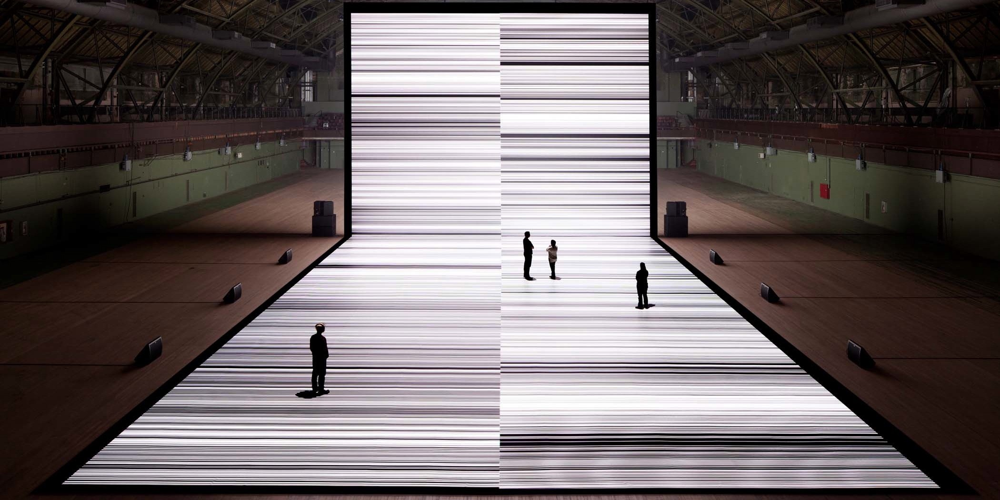
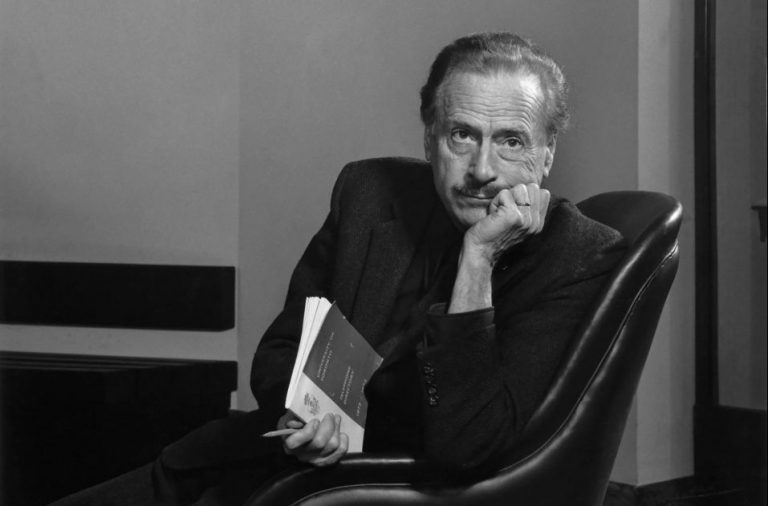

Skills en creativiteit, de elementen voor een goed design
Wat is de invloed van design op de maatschappij? Wat is de rol van de nieuwe designer daarin? En mijn persoonlijke vraag: 'Is film en televisie design?'.
Recente artikelen

The artist and the new world
Theo Ploeg

Gemasseerd door de media
Theo Ploeg

Het nieuwe ontwerp landschap
Erwin Slegers
Sociology, Theodor Adorno
Over hoe filosoof en socioloog Theodor Adorno denkt over de vrijetijdsbesteding in onze samenleving.